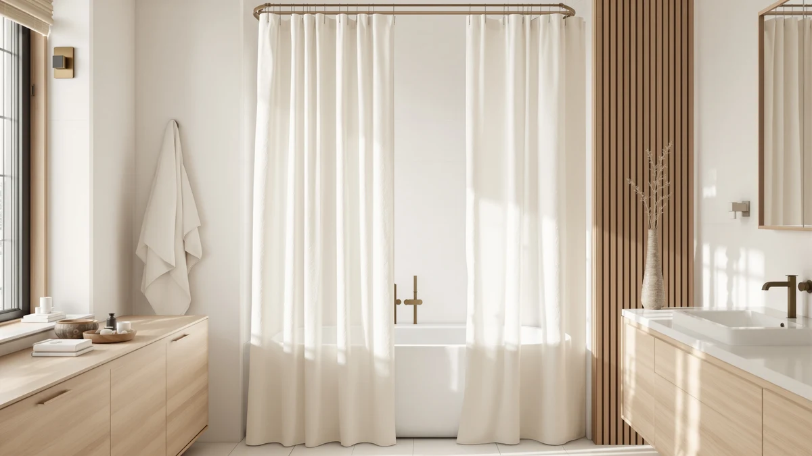

Xoguibo No Hook Shower Curtain Review (2026): Worth It?
Prices and picks verified as of November 2026. Independent, reader-supported reviews.


Quick Answer
This Xoguibo no hook shower curtain review found the Xoguibo No Hook Shower Curtain to be a straightforward, grommet-free pick at $19.99 that fits a standard 72 by 75 inch shower and skips hooks entirely. Shoppers who want a published rating to lean on, or who need a new rod to hang it on, should compare it against RnnJoile's curtain and TEECK's adjustable rod below first.
Our pick: No Hook Shower Curtain with, $19.99 Check Price on Amazon
Bottom line: our top pick is the No Hook Shower Curtain with Liner Set Hotel Waffle Curtain at $19.99.
Things to Know Before You Buy
- The Xoguibo curtain uses a sewn, grommet-free header instead of individual hook holes, so it threads directly onto a rod without separate hardware.
- At $19.99, it costs seven cents more than RnnJoile's Tropical Shower Curtain Green and twenty cents more than Colorful Star's no-hook pick, so price alone won't settle the choice.
- It ships in one size, 72 inches wide by 75 inches long, which fits a standard tub alcove or shower stall but won't stretch to cover a wider opening.
- The curtain uses a polyester and PEVA blend fabric, a combination that favors water resistance over the softer hand of cotton or linen curtains.
This Xoguibo no hook shower curtain review puts the curtain's ringless header, $19.99 price, and 72 by 75 inch polyester and PEVA build next to two direct no-hook alternatives and a compatible rod, the three products shoppers most often compare against it before buying. Xoguibo skips hooks and rings entirely, so the curtain slides straight onto a standard rod, and that single design choice shapes almost everything else about who it fits, including setup time and how well the curtain pairs with an existing rod.
We built this comparison from the product specs, pricing, and manufacturer listings for all four products, plus the review data each listing has gathered on Amazon. The Xoguibo curtain lists at $19.99, seven cents more than RnnJoile's Tropical Shower Curtain Green and twenty cents more than Colorful Star's no-hook pick, so price alone will not settle this decision. A reader skimming for a quick answer can stop at the price tags; a reader choosing between two close curtains and a rod purchase needs the detail that follows.
Why You Should Trust Us
Ilane Tall has covered bathroom fixtures and shower hardware for Best Shower Curtains since the site launched, and this Xoguibo no hook shower curtain review follows the same research process the site uses throughout: comparing manufacturer specs, current pricing, and verified owner feedback rather than running a physical testing lab. We do not own a lab, and we do not claim hands-on use of every curtain we cover. Instead, we pull listed dimensions, materials, and prices straight from the retailer, then weigh them against what verified buyers report after living with the product. Readers can find the full methodology behind every review on this site on our how we research page, and the same approach governs this Xoguibo no hook shower curtain review from the pricing table through the final verdict.
How We Compared
Our process for this Xoguibo no hook shower curtain review starts with the manufacturer's own listing: material, dimensions, and price, cross-checked against the two comparison curtains and the compatible rod on the same criteria. From there, we read through verified buyer reviews on Amazon to see how a ringless header holds up over daily use and how the sizing matches real bathrooms. We did not purchase or install the curtain or the rod ourselves. Reviewers consistently note that a ringless design saves setup time compared with curtains that need individual hooks, and that feedback shaped how we weighed the Xoguibo pick against RnnJoile and Colorful Star.
Overview & Specs

No Hook Shower Curtain with
What we like
- Grommet-free header skips the need for separate hooks or rings
- Priced at $19.99, within a quarter of both RnnJoile and Colorful Star's no-hook curtains
- Polyester and PEVA blend favors water resistance over absorption
Flaws but not dealbreakers
- Ships in a single 72 by 75 inch size, with no wider or longer option listed
- The listing does not publish a star rating or review count, unlike RnnJoile's curtain
| Material | Polyester / PEVA |
| Size | Standard 72"W x 75"L |
Xoguibo builds this curtain around one idea: remove the hooks entirely. Instead of a row of grommet holes, the top edge has a sewn sleeve that slides directly onto a shower rod, so there is no separate hardware to buy, lose, or replace when a hook snaps. At $19.99, it sits within a narrow band of the two curtains compared here, seven cents above RnnJoile and twenty cents above Colorful Star. The fabric blends polyester and PEVA, a pairing that favors quick drying and water resistance over the softer hand of cotton or linen curtains. It ships in one size, 72 inches wide by 75 inches long, which covers most standard tubs and stand-up shower stalls without needing a custom cut.
Because the design centers on a headerless install, setup mostly means sliding the curtain onto the rod and adjusting the gathers, a step shoppers browsing Xoguibo's no-hook category consistently cite as the reason they switched away from ringed curtains. The tradeoff is sizing flexibility: Xoguibo does not currently list a wider or extra-long version, so a nonstandard bathroom, a clawfoot tub, or a shower wider than 72 inches needs a different curtain or a rod like TEECK's adjustable pick to extend the setup. The listing also skips a public star rating or review count, which makes it harder to gauge long-term durability against RnnJoile's curtain, which carries a small but perfect review history. For a standard-size bathroom where hook hardware causes more hassle than it solves, the Xoguibo curtain covers the basics at a price that matches its closest competitors.
What We Liked
The biggest draw is the no-hook header itself. Skipping individual grommets means fewer small parts that can crack, bend, or go missing in a bathroom drawer, and it cuts setup down to one motion instead of a dozen. The Xoguibo No Hook Shower Curtain's $19.99 price also holds up against the field: it costs only cents more than RnnJoile and Colorful Star, so Xoguibo is not winning on cost, but it is not losing by much either. Its polyester and PEVA blend dries faster than cotton alternatives, which matters in a bathroom that does not get much airflow. A standard 72 by 75 inch size also means most shoppers can order it without measuring a rod first, since it matches a size Amazon lists among the most common shower curtain dimensions.
What Could Be Better
The single 72 by 75 inch size is the clearest limit. Shoppers with a clawfoot tub, an oversized stall, or a rod wider than standard will need to look elsewhere or pair the curtain with an adjustable rod like TEECK's 32 to 80 inch option, since Xoguibo has not published an extra-wide or extra-long cut. The listing also lacks a visible star rating or review count, so buyers cannot lean on a track record the way they can with RnnJoile's curtain, which has earned a perfect rating from a small group of reviewers. That gap does not mean the curtain performs poorly, but it does mean this Xoguibo no hook shower curtain review has less third-party data to draw on than it would for a more established listing. Shoppers who weigh a review history heavily before buying should treat the missing rating as a real factor, not a minor footnote, since RnnJoile is the only product in this comparison with a published rating to check.
Who Is It For?
The Xoguibo No Hook Shower Curtain fits a shopper with a standard-size bathroom who wants to skip buying hooks as a separate purchase and does not need a published review history to feel confident about the purchase. It is a reasonable match for a rental or a guest bathroom where the goal is a working curtain installed fast, not a design centerpiece. Anyone who wants a verified track record or a wider rod to match a nonstandard shower should compare it against RnnJoile or TEECK's adjustable rod before deciding. A shopper furnishing several bathrooms at once might also browse our best hookless shower curtains roundup for a wider set of ringless options beyond these three.
Alternatives to Consider
If the Xoguibo curtain's single size or lack of published reviews rules it out, these three alternatives cover a curtain with an actual review history, a lower-cost no-hook design, and an adjustable rod for a nonstandard shower. Two of the three are curtains that compete directly with Xoguibo; the third is a rod that pairs with any of them rather than a rival curtain.

Also Great
TEECK Shower Curtain Rod 32-80
TEECK's rod is not a competing curtain, it is an adjustable 32 to 80 inch rod priced the same as Xoguibo at $19.99, useful for anyone whose shower is wider than the 72 inch Xoguibo curtain can cover or who needs a new rod before hanging any no-hook curtain.
$19.99
Check Price on Amazon
Also Great
RnnJoile Tropical Shower Curtain Green
At $19.92, RnnJoile's Tropical Shower Curtain Green undercuts Xoguibo by seven cents and carries a perfect 5.0 rating from 5 verified reviews, giving it the only published track record in this comparison.
$19.92
Check Price on Amazon
Best Value
Colorful Star No Hook Shower
Priced at $19.79, Colorful Star's No Hook Shower Curtain undercuts Xoguibo by twenty cents while keeping the same grommet-free header, a straightforward swap for shoppers chasing the lowest price in this comparison.
$19.79
Check Price on AmazonDoes the Xoguibo No Hook Shower Curtain come with hooks or rings?
No.
What size is the Xoguibo No Hook Shower Curtain?
It ships in a single 72 inch wide by 75 inch long size, which covers most standard tubs and shower stalls.
Frequently Asked Questions
Does the Xoguibo No Hook Shower Curtain come with hooks or rings?
No. It uses a sewn, grommet-free header that slides directly onto a standard shower rod, so there is nothing separate to buy. You still need a rod the curtain can slide onto, and a rod wider than 72 inches will leave gaps at the ends.
What size is the Xoguibo No Hook Shower Curtain?
It ships in a single 72 inch wide by 75 inch long size, which covers most standard tubs and shower stalls. Xoguibo does not currently list a wider or longer version, so a nonstandard bathroom would need a different curtain or a wider rod like TEECK's adjustable 32 to 80 inch option.
Is the Xoguibo curtain worth it compared to RnnJoile and Colorful Star?
At $19.99, it costs seven cents more than RnnJoile's Tropical Shower Curtain Green and twenty cents more than Colorful Star's no-hook pick. RnnJoile is the only one of the three with a published rating, a 5.0 from 5 verified reviews, so it is worth comparing before buying Xoguibo's curtain if a review history matters to you. If the no-hook header alone is the priority, Xoguibo delivers that within cents of its closest competitors.
Final Verdict
This Xoguibo no hook shower curtain review comes down to price parity versus proof. Xoguibo, RnnJoile, and Colorful Star all land within twenty cents of each other, so the no-hook header is Xoguibo's main differentiator, not its price. RnnJoile is the only curtain here with a published rating, a perfect 5.0 from 5 verified reviews, which gives it an edge for buyers who want some proof before buying. For a standard-size bathroom where skipping hooks is the priority and a review history is not a dealbreaker, the Xoguibo No Hook Shower Curtain is the pick worth choosing. Shoppers who want a verified track record or a wider rod should compare RnnJoile or TEECK's adjustable rod first. None of the three products in this comparison asks you to spend more than twenty dollars, so the real cost of choosing wrong is a short wait for a return label. It will not wreck your budget.